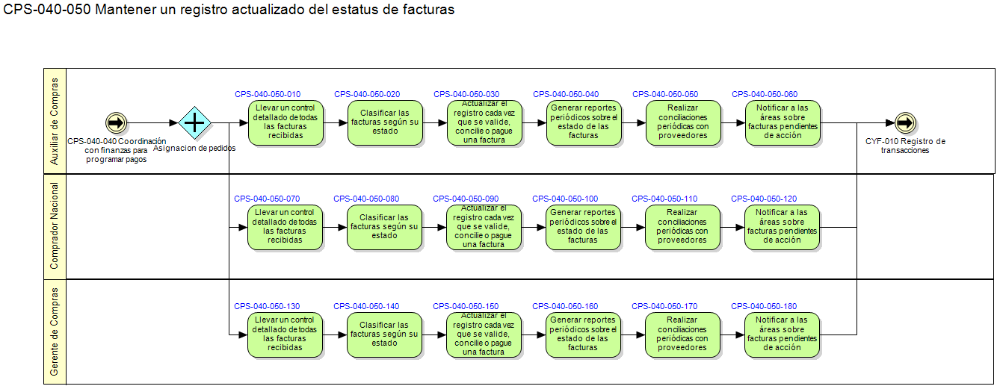

Mapeo de Procesos Travalex
Back to CPS - Compras
Home
Back to CPS-040 Gestión de facturas y pagos nacionales

Description:
Mantener un registro actualizado del estatus de facturas pendientes y pagadas
Top